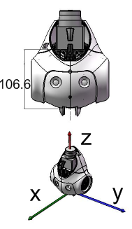

NAO Hardware | Product range | Motors & Kinematics | Components & Sensors | Optional devices
See also
This device is designed for advanced research such as SLAM (Simultaneous Localization And Mapping).
It is not designed to support all NAO standard behaviors. Better use the standard head for voice recognition or animations involving fall hazard.
As shown on the diagram, z is equivalent to 106.6 mm between the rotation center and the laser plane.
Warning
A fall could damage the laser head.
Version 3.2 is not yet protected against damages occurring during a fall.
Contact our support team to learn how you can protect the head from fall hazard.